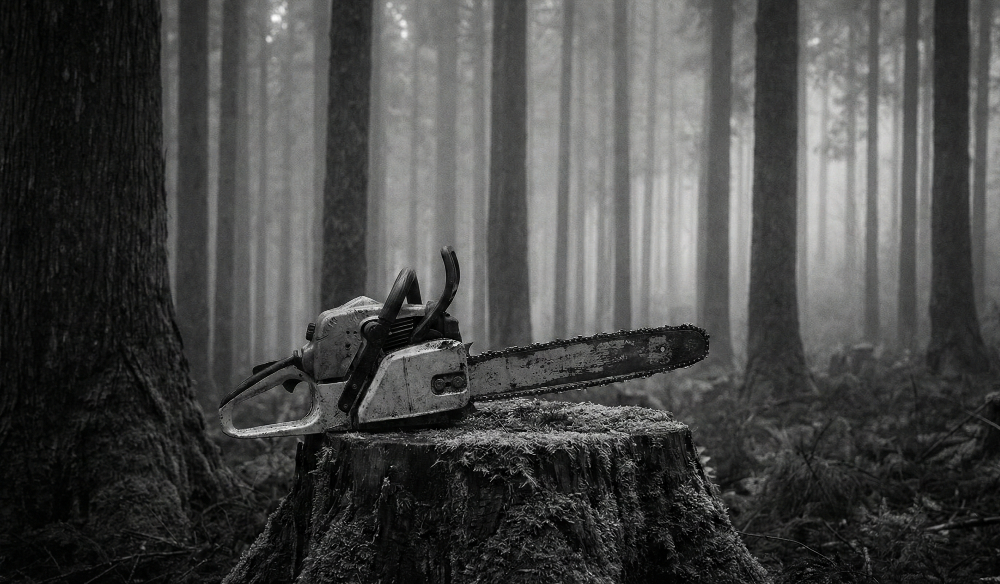
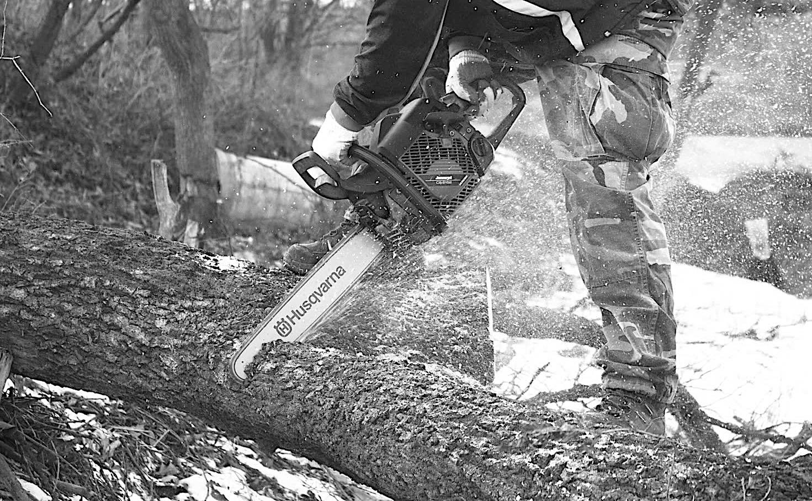
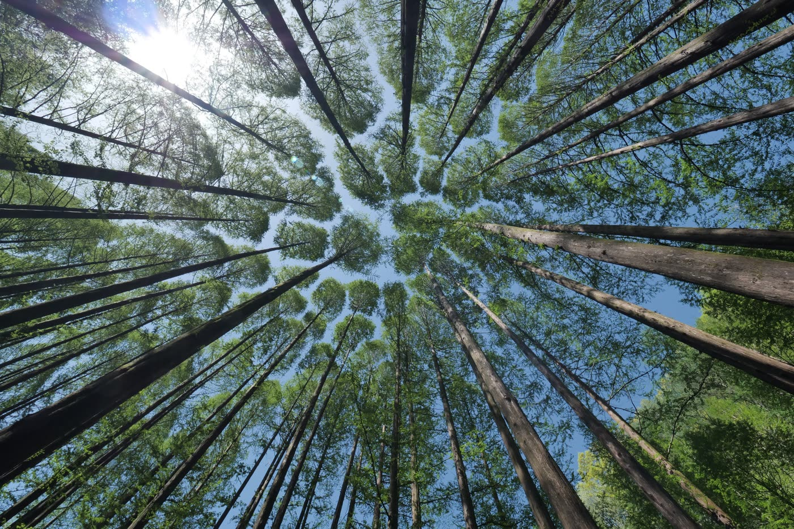

01FORESTRY
山を整え、
森を循環させる。
立木の伐採・搬出から造林まで。安全と技術を礎に、健やかな森林経営を支えます。
IWATE / ICHINOSEKI — 38.93°N 141.13°E
ROOTED IN IWATE. CRAFTED FOR THE FUTURE.
山の時間と、人の暮らしをつなぐ。
私たちは岩手の森に生きる林業会社です。
SAITO FORESTRY CO., LTD. / SINCE 2017
伐ることは、
育てること。
木を伐り、運び、活かす。その一つひとつに森の未来への責任があります。25年以上、岩手の山と向き合ってきた目と技で、木が持つ価値を余すことなく次の暮らしへ届けます。
齋藤林業について ↗OUR BUSINESS / 01—03
立木の伐採・搬出から造林まで。安全と技術を礎に、健やかな森林経営を支えます。
THE EYE FOR WOOD
一本ごとに違う、
木の声を聴く。
丸太の段階で質を見極め、最もふさわしい形で活かす。経験だけが育てる目利きが、私たちの仕事の原点です。

CRAFT / TRUST / TRACEABILITY
個人事業主時代から25年以上。岩手の山で培った経験が、木の状態と価値を見極めます。
ミズナラ、ケヤキ、クリ、クルミなど、岩手で育った多様な樹種を取り扱っています。
合法性と持続可能性が確認された木材を供給。産地の見える、確かな素材を届けます。
岩手県第1期認定者9名の一人。安全で高度な伐木技術と指導力を現場に活かしています。
山から製品までを見届ける一貫体制。産地が見える木材を、明瞭な価格と確かな説明でお届けします。
私たちの技術と認定を見る ↗A FOREST IS NOT A RESOURCE.
IT IS A PROMISE.
FIELD NOTES / IWATE


OUR PLACE / ICHINOSEKI, IWATE
BASE〒029-0131
岩手県一関市狐禅寺川口
VISIT現地引き取り・ご来場は
事前のご予約をお願いします。
38.9195° N141.1215° E
START A CONVERSATION
薪のご注文、一枚板のご相談、立木・伐採について。写真や寸法をLINEで送っていただければ、担当者が直接お答えします。